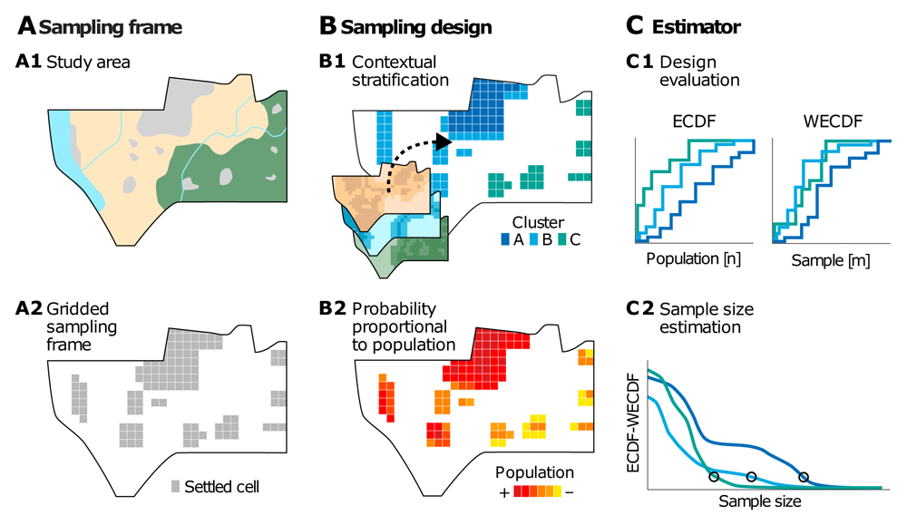
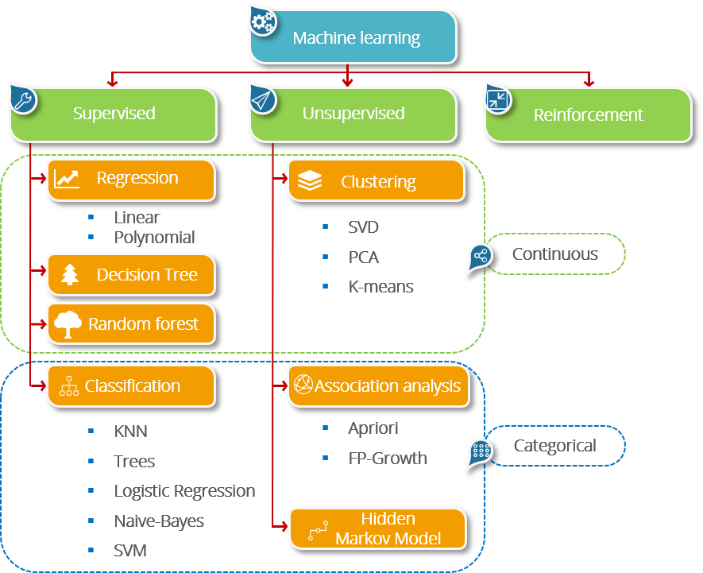
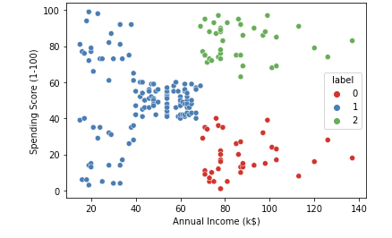
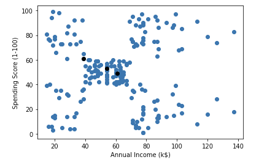
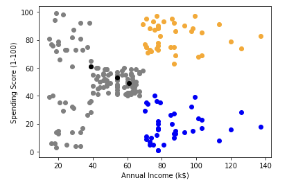

Workshop on Advanced Sampling Methodologies
AI and machine learning for sampling
Dr. Gianluca Boo, WorldPop, University of Southampton
2025-09-17
Workshop’s agenda
- Day 1: Introduction to QGIS
- Day 2: Automatic update of census EA and national sampling frame
- Day 3: Introduction to R programming
- Day 4: Introduction to Sampling Design
- Day 5: Advanced R programming
- Day 6: Earth observation (EO) for sampling design
- Day 7: AI and machine learning for sample selection
- Day 8: Simulation and optimization of sampling strategies
- Day 9: R Shiny for sampling design evaluation
- Day 10: Wrap-up and workshop evaluation
Today’s agenda
- Introduction to AI and ML in sampling
- K-Means clustering for stratification
- Random Forest for sample weighting and prediction
- Implementation in R with tidymodels
- Practical exercises
AI and machine learning in sampling
- Improve sampling efficiency and representativeness
- Detect patterns in complex population data
- Reduce bias and improve stratification
- Reduce sample size while maintaining accuracy

A grid-based sample design framework (source: Boo et al.).
Overview of Machine Learning
- Supervised learning: prediction based on known outcomes
- Unsupervised learning: finding patterns/clusters without labeled outcomes
- Features (inputs) and targets (outputs)
- Training, validation, and prediction workflow

source: Edureka.
Unsupervised learning: K-Means clustering
- Clustering is an unsupervised learning method
- Detect natural groups in population data
- Useful for creating representative samples
- k-means: widely used for stratification
K-Means clustering
- Partition population into K clusters
- Minimize within-cluster variance
- Example: stratification for sampling based on spending and annual income

source: Neptune.ai.
K-Means clustering
- A partitioning clustering algorithm
- Divides data into K clusters
- Each cluster has a centroid (mean)
- Objective: minimize within-cluster variance

K-means clusters’ centroid (with k=3), source: Neptune.ai.
K-means clustering
Main steps
- Choose K (number of clusters)
- Randomly initialize cluster centroids
- Assign each observation to nearest centroid
- Update centroids (mean of assigned points)
- Repeat until convergence

K-means clusters’ centroid (with k=3), source: Neptune.ai.
K-Means in R
The Iris dataset
- British statistician and biologist Ronald Fisher in his 1936 paper.
- The data set consists of 50 samples from each of three species of Iris.
- Four features were measured from each sample: the length and the width of the sepals and petals, in centimeters.


:::::
K-Means in R
ℹ️ Try to run the code in your Script Editor.
K-Means in R
library(tidymodels)
library(tidyverse)
library(cluster)
## Example dataset
data <-
iris |>
select(-Species)
## K-Means clustering
kmeans_fit <- kmeans(scale(data), centers = 3)
data <-
data |>
mutate(Cluster=kmeans_fit$cluster,
Species=iris |> pull(Species))
ggplot(data, aes(x=Sepal.Length, y=Sepal.Width, color=factor(Cluster))) +
geom_point(size=3) +
theme_minimal() +
labs(color="Cluster")ℹ️ Try to run the code in your Script Editor. Try to use 4 or 5 clusters.
K-Means for Sampling Design
- Select representative units from each cluster
- Ensures diversity within the sample
- Acts as a data-driven stratification method
Supervised Learning: Random Forest
- Ensemble of decision trees
- Predict outcomes or probabilities
- Assess feature importance
- Useful for weighted sampling or prioritization
Random Forest Concept
- Many decision trees combined
- Classification: majority vote
- Regression: average prediction
- Identify important variables in dataset
Random Forest Example in R
Evaluating Random Forest
- Confusion matrix
- Accuracy, precision, recall
- Feature importance plot
Using RF Predictions for Sampling
- Predict probability of selection or outcome
- Compute weights: \(w_i = 1 / p_i\)
- Adjust sample to improve representativeness
Combining K-Means and Random Forest
- K-Means: identify clusters for stratified sampling
- Random Forest: weight or prioritize units within clusters
Example Workflow in R
Visualizing Sample Selection
Practical Considerations
- Choosing K in k-means (elbow method)
- Number of trees in random forest
- Handle missing data appropriately
- Scale/normalize features before clustering
Advantages of ML-Based Sampling
- Data-driven stratification
- Capture complex patterns in population
- Reduce variance and sampling bias
Limitations
- Requires sufficient population data
- Black-box predictions may reduce interpretability
- Computationally intensive for large datasets
Take home
- AI/ML complements traditional sampling
- K-Means identifies clusters for stratification
- Random Forest helps prioritize or weight units
- R/tidymodels provides reproducible workflow
- Visualization is key for interpretation
Resources
- James, G., Witten, D., Hastie, T., Tibshirani, R. (2021). An Introduction to Statistical Learning with Applications in R. Springer. https://www.statlearning.com
- Kuhn, M., & Wickham, H. (2023). tidymodels: Unified Interface for Modeling in R. https://www.tidymodels.org
- Pebesma, E. (2018). Simple Features for R. R Journal. https://journal.r-project.org
- R Core Team. (2025). R: A Language and Environment for Statistical Computing. https://www.R-project.org
- Grolemund, G., Wickham, H. (2017). R for Data Science. https://r4ds.had.co.nz